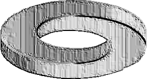
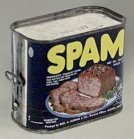
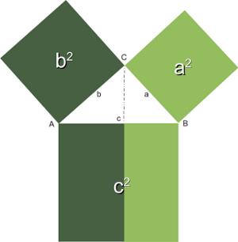

For Loops
Introduction
 Like the while loop the for loop is a programming language statement, i.e. an iteration statement, which allows a code block to be repeated a certain number of times.There are hardly programming languages without for loops, but the for loop exists in many different flavours, i.e. both the syntax and the semantics differs from one programming language to another.
Different kinds of for loops:
- Count-controlled for loop (Three-expression for loop)
This is by far the most common type. This statement is the one used by C. The header of this kind of for loop consists of a three-parameter loop control expression. Generally it has the form:
for (A; Z; I)
A is the initialisation part, Z determines a termination expression and I is the counting expression, where the loop variable is incremented or dcremented. An example of this kind of loop is the for-loop of the programming language C:
for (i=0; i <= n; i++)
This kind of for loop is not implemented in Python! - Numeric Ranges
This kind of for loop is a simplification of the previous kind. It's a counting or enumerating loop. Starting with a start value and counting up to an end value, likefor i = 1 to 100
Python doesn't use this either. - Vectorized for loops
They behave as if all iterations are executed in parallel. This means for example that all expressions on the right side of assignment statements get evaluated before the assignements. - Iterator-based for loop
Finally, we come to the one used by Python. This kind of a for loop iterates over an enumeration of a set of items. It is usually characterized by the use of an implicit or explicit iterator. In each iteration step a loop variable is set to a value in a sequence or other orderable data collection. This kind of for loop is known in most Unix and Linux shells and it is the one which is implemented in Python.
Syntax of the For Loop
As we mentioned earlier, the Python for loop is an iterator based for loop. It steps through the
items in any ordered sequence list, i.e. string, lists, tuples, the keys of dictionaries and other
iterables. The Python for loop starts with the keyword "for" followed by an arbitrary variable name,
whihc will hold the values of the following sequence object, which is stepped through. The general syntax
looks like this:
for <variable> in <sequence>: <statements> else: <statements>The items of the sequence object are assigned one after the other to the loop variable; to be precise the variable points to the items. For each item the loop body is executed.
Example of a simple for loop in Python:
>>> languages = ["C", "C++", "Perl", "Python"] >>> for x in languages: ... print x ... C C++ Perl Python >>>
 The else block is special; while Perl programmer are familiar with it, it's an unknown concept to C and C++ programmers. Semantically, it works exactly as the optional else of a while loop. It will be executed only if the loop, if the loop hasn't been "broken" by a break statement. So it will only be executed, after all the items of the sequence in the header have been used.
If a break statement has to be executed in the programm flow of the for loop, the loop will be exited and the program flow will continue with the first statement following the for loop, if there is any at all. Usually break statements are wrapped into conditional statements, e.g.
edibles = ["ham", "spam","eggs","nuts"]
for food in edibles:
if food == "spam":
print("No more spam please!")
break
print("Great, delicious " + food)
else:
print("I am so glad: No spam!")
print("Finally, I finished stuffing myself")
If we call this script, we get the following result:
$ python for.py Great, delicious ham No more spam please! Finally, I finished stuffing myself $Removing "spam" from our list of edibles, we will gain the following output:
$ python for.py Great, delicious ham Great, delicious eggs Great, delicious nuts I am so glad: No spam! Finally, I finished stuffing myself $Maybe, our disgust with spam is not so high, that we want to stop consuming the other food. Now, this calls into play the continue statement. In the following little script we use the continue statement to go on with our list of edibles, when we have encountered a spam item. So continue prevents us from eating spam!
edibles = ["ham", "spam", "eggs","nuts"]
for food in edibles:
if food == "spam":
print("No more spam please!")
continue
print("Great, delicious " + food)
# here can be the code for enjoying our food :-)
else:
print("I am so glad: No spam!")
print("Finally, I finished stuffing myself")
The output looks as follows:
$ python for.py Great, delicious ham No more spam please! Great, delicious eggs Great, delicious nuts I am so glad: No spam! Finally, I finished stuffing myself $
The range() Function
The built-in function range() is the right function to iterate over a
sequence of numbers. It generates an iterator of arithmetic progressions:
Example:
>>> range(10) range(0, 10) >>> list(range(10)) [0, 1, 2, 3, 4, 5, 6, 7, 8, 9] >>>range(n) generates an iterator to progress the integer numbers starting with 1 and ending with (n -1). To produce the list with these numbers, we have to cast rang() with the list(), as we did in the previous example.
range() can also be called with two arguments:
range(begin,end)The above call produces the list iterator of numbers starting with begin (inclusive) and ending with one less than the number "end".
Example:
>>> range(4,10) range(4, 10) >>> list(range(4,10)) [4, 5, 6, 7, 8, 9] >>>
So far the increment of range() has been 1. We can specify a different increment with a third argument. The increment is called the "step". It can be both negative and positive, but not zero:
range(begin,end, step)Example with step:
>>> list(range(4,50,5)) [4, 9, 14, 19, 24, 29, 34, 39, 44, 49] >>>It can be done backwards as well:
>>> list(range(42,-12,-7)) [42, 35, 28, 21, 14, 7, 0, -7] >>>The range() function is especially useful in combination with the for loop, as we can see in the following example. The range() function supplies the numbers from 1 to 100 for the for loop to calculate the sum of these numbers:
n = 100
sum = 0
for counter in range(1,n+1):
sum = sum + counter
print("Sum of 1 until %d: %d" % (n,sum))
Calculation of the Pythagorean Numbers
 Generally, it is assumed, that the Pythagorean theorem was discoverd by Pythagoras, that is why it has its name. But there is a debate whether the Pythagorean theorem might have been discovered earlier or by others independently. For the Pythagoreans, - a mystical movement, based on mathematics, religion and philosophy, - the integer numbers satisfying the theorem were special numbers, which had been sacred to them.These days Pythagorean numbers are not mystical anymore. Though to some pupils at school or other people, who are not on good terms with mathematics, they may still appear so.
So the definition is very simple:
Three integers satisfying a2+b2=c2 are called Pythagorean numbers.
The following program calculates all pythagorean numbers less than a maximal number.
Remark: We havae to import the math module to be able to calculate the square root of a number.
#!/usr/bin/env python3
from math import sqrt
n = int(input("Maximale Zahl? "))
for a in range(1,n+1):
for b in range(a,n):
c_square = a**2 + b**2
c = int(sqrt(c_square))
if ((c_square - c**2) == 0):
print(a, b, c)
Iterating over Lists with range()
If you have to access the indices of a list, it doesn't look to be a good idea to use the for loop to iterate over the lists. We can access all the elements, but the index of an element is not available. But there is a way to access both the index of an element and the element itself. The solution consists in using range() in combination with the length function len():
fibonacci = [0,1,1,2,3,5,8,13,21]
for i in range(len(fibonacci)):
print(i,fibonacci[i])
print()
The output looks like this:
0 0 1 1 2 1 3 2 4 3 5 5 6 8 7 13 8 21Remark: If you apply len() to a list or a tuple, you get the number of elements of this sequence.
List iteration with Side Effects
If you loop over a list, it's best to avoid changing the list in the loop body. To give you an example, what can happen, have a look at the following example:
colours = ["red"]
for i in colours:
if i == "red":
colours += ["black"]
if i == "black":
colours += ["white"]
print(colours)
What will be printed by "print colours"?
['red', 'black', 'white']To avoid these side effects, it's best to work on a copy by using the slicing operator, as can be seen in the next example:
colours = ["red"]
for i in colours[:]:
if i == "red":
colours += ["black"]
if i == "black":
colours += ["white"]
print(colours)
Now the output looks like this:
['red', 'black']We still might have done something, what we shouldn't have done. We changed the list "colours", but our change hasn't had any effect on the loop anymore. The elements to be looped remained the same during the iterations.